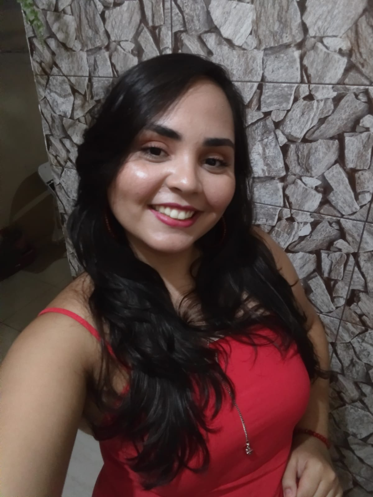

Portfólio Web
Sejam bem vindos ao meu portfólio web [em construção]
Meu nome é Cássia Avellar, tenho 26 anos, moro no Rio de Janeiro, mas não sou carioca da gema.
Sou pedagoga, mãe de pets - Oliver & Olavo, e futura desenvolvedora web pela Trybe - 1 de 12.
Aqui vocês terão contato com as atividades desenvolvidas por mim nesta formação.
Estou com bastantes expectativas nesta transição de carreira e desejo dividir com vocês esse momento incrível.


Quer conhecer um pouquinho dessa pessoa, que era professora de turmas do maternal, e veio se encontrar no mundo dos códigos?
Só mandar um slack no canal da turma 22, e me adicione na rede do Linkedin
Você aí pode estar se perguntando: "Hmm, mas que mudança de carreira" não é?
Acredite: uma baita mudança sim! E o lado bom da história é que os conhecimentos não são perdidos!
O essencial neste momento é ter foco nos estudos e usar tudo aquilo que já aprendi, para se tornar uma profissional melhor.
Veja o que eu vim construindo sendo teacher dos pequenos, e que me será útil aqui na Trybe:
- Ser paciente;
- Ter escuta ativa;
- Explicar um conceito utilizando vários formas e métodos;
- Aprender a empatia;
- Usar a criatividade , ainda mais nos dias que as coisas saem um pouco do plano...
- Comunicação sempre!
- E muito mais...
O foco aqui é aprender a aprender!